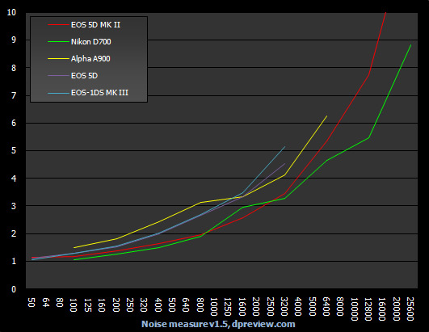
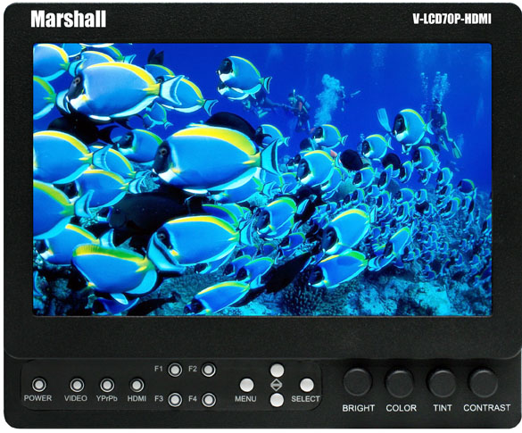
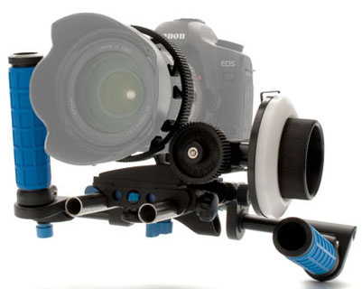
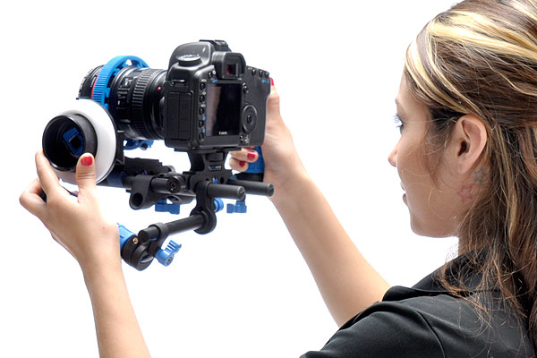
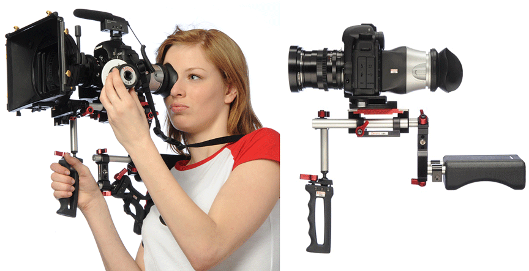
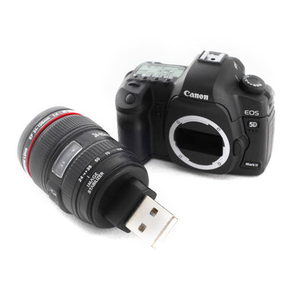

Canon 5D Mark II: onze bevindingen
Dit fototoestel is ook een HD video camera
Zoals met zoveel fototoestelen tegenwoordig kan men ook met de Canon 5D Mark II full HD video opnemen. Er is echter een verschil. De kwaliteit van dit toestel is van een andere orde dan bvb een iPhone. De grote sensor en hoge gevoeligheid laten ons toe om prachtige beelden te maken.
Scherptediepte
De 35 mm kleinbeeld sensor heeft als gevolg dat we met deze camera een 'filmische' look kunnen creëren. Bij fictie of in een andere gecontroleerde situatie zorgt de kleine scherptediepte ervoor dat we beelden kunnen maken waarbij het onderwerp los komt van de achtergrond.
Kaizen Usecase VRT Big Band from filip faste on Vimeo.
Eens we de gecontroleerde omgeving verlaten en bvb een ENG reportage draaien zal het gebrek aan scherptediepte ons parten spelen en dit om 2 redenen; typisch aan een ENG reportage is het vertellend element - men brengt verslag uit van hetgeen er is gebeurd. Om dit zo goed mogelijk te doen wenst men duidelijke scherpe beelden die alles laten zien. Men heeft hier geen boodschap aan filmische technieken zoals het verleggen van de scherptediepte of het uit focus houden van de omgeving. In een ENG reportage wensen we zoveel mogelijk scherptediepte. Ten tweede is het, door een gebrek aan scherptediepte, quasi onmogelijk om een (niet geregiseerd) bewegend onderwerp - en de beweging hoeft echt niet veel te zijn - in focus te houden. De enige oplossing is het gebruik van een groothoeklens waarbij men scherp stelt op de hyperfocale afstand.
Futebol - Canon 5D from Alexandre Elaiuy on Vimeo.
De cameraman is niet in staat om het onderwerp scherp te houden.
Scherp stellen
Scherp stellen is eenvoudig en niet eenvoudig. De beperkte draaihoek van de scherpstellingsring tussen de minimum afstand en oneindig laat toe om zeer snel scherp te stellen op een onderwerp. Dit heeft echter als nadeel dat kleine variaties in de afstand zeer moeilijk te controleren zijn. Zo is het in een getrokken shot quasie ondoenbaar om de scherpstelling tussen 2 personen te verleggen. Zowel Zacuto als Redrock Micro maken focusringen die men op de 5D kan monteren waardoor het verleggen van het focuspunt iets eenvoudiger wordt.
Zacuto - DSLR Gunstock Shooters from Edit Crunch on Vimeo.
Zacuto DSLR Gunstock Shooters met focus puller
Gevoeligheid
Een grote sensor laat toe om grotere PIXELS te hebben die op zich weer meer licht kunnen opvangen. Maw onze camera is niet alleen veel gevoeliger, hij produceert ook minder ruis per pixel. We kunnen de camera rustig instellen op 3200 ISO (maximum is 25600 ISO) zonder noemswaardige ruis te zien.

Naar de toekomst toe biedt dit perspectieven voor HD camera's: stel een 35mm sensor met een resolutie van 1920x1080 pixels (veel lager dan de x van de Canon 5D Mark II). De lichtopbrengst per pixel zal fenomenaal. We zullen kunnen filmen bij nacht zonder noemeswaardige ruis.
Details
De details die deze camera kan tonen zijn fenomenaal. Kijk maar naar de rook het volgende fragment.
VOORBEELDSpijtig genoeg verdwijnen deze details als we onze video omzetten naar een meer bruikbare bitrate.
VOORBEELDEr is nog werk aan de winkel als we deze beelden in hun volle glorie tot in de huiskamer willen brengen. Beter encoders of meer bandbreedte, maar eigenlijk liefst beide.
Kleur
De automatische witbalans meting van de camera heeft de neiging om zich op een te hoge waarde in te stellen bij lage kleurtemperaturen. Dit heeft als gevolg dat de beelden er te warm uitzien. Beelden gefilmd met deze camera hebben dan ook een typische Canon 5D look, hetgeen niet altijd gewenst is.
KaizenUsecase02 from filip faste on Vimeo.
De video vertoont een rode zweem. Dit is vooral storend in het aangezicht van de spreker.
In automatische mode wordt de kleurtemperatuur tijdens het draaien aangepast. Dit gebeurt zo regelmatig dat het een storend effect heeft.
De te hoge waarde voor de kleurtemperatuur is te merken in heel het fragment. De variatie in de witbalans valt sterk op rond seconde 13.
Artefacts
Een van de meer opvallende artefacts van deze camera is aliasing of moiré probleem. Dit is te wijten aan een slordige 'downsampling' van de het materiaal van 5760x3240 naar 1920x1080. Waarschijnlijk heeft men een bi-cubic interpolatie filter gebruikt, typisch voor foto camera's, maar niet goed genoeg voor video camera's die te maken hebben met bewegende beelden. Het effect van de aliasing wordt dan nog eens versterk door de MPEG4 encoder (aliasing introduceert hoge frequenties). Bovendien worden een heleboel bits verspilt aan dit ongewenst effect.
Als we dus een documentaire willen draaien over fijn Chinese zijde zullen we een andere camera moeten kiezen. Willen we echter mensen filmen op een onscherpe achtergrond dan is de Canon 5D MII een uitstekende keuze.
Kijk vooral naar de blouse van de vrouw. Het moiré effect uit zich in een regenboog van kleuren.
Aangezien de oplossing voor dit soort problemen vrij eenvoudig is verwachten we dit fenomeen in de toekomst niet meer te zien.
In sommige gevallen verliest de camera een frame. We hebben dit enkel kunnen reproduceren in automatische mode bij een snelle horizontale beweging en een verandering in het omgevingslicht.
De camera lijdt ook aan het rolling shutter probleem wat zich uit in een vervorming van de vertikale lijnen in het beeld bij een horizontale pan.
Monitoring
Alhoewel het beeld op het kleine LCD scherm er goed uit ziet hebben we voor een acurate scherpstelling toch een professionele monitor nodig met focus assistentie. Bovendien is het handig om de camera niet steeds op ooghoogte te moeten houden.

Marshall Electronics V-LCD70P-HDMI.
Monitoring van de audio is enkel visueel mogelijk op de camera en dit gaat dan ten koste van het beeld. Kortom voor een gedegen monitoring zijn we afhankelijk van externe apparatuur.
Het verdict
Terwijl deze camera's alles in zich hebben om prachtige videobeelden te maken, blijven het in weze fototoestellen. Ze zijn ontworpen om foto's te trekken. Een DSLR voor een serieus videoproject gebruiken vraagt dikwijls een investering in randapparatuur die meer kost dan de camera zelf. We mogen in de nabije toekomst dan ook een hertekend camerahuis verwachten. Een camera die speciaal ontworpen is voor het draaien van video maar die gebruik maakt van de technologie die ontwikkelt is voor de Canon 5D MII en consoorten. Aan de andere kant moeten we toch stellen dat de voordelen (lage prijs, vele lenzen, DOF, lichtopbrengst, ...) in veel gevallen zullen opwegen de nadelen (scherpstelling, aliasing, ...) en we vandaag de Canon 5D Mark II dan ook in verschillende projecten zullen tegenkomen.
Tot slot tonnen we u graag wat randapparatuur waarmee we de Canon 5D Mark II kunnen omtoveren in een (bijna) echte filmcamera.
Handstatief

Redrock Micro Captain Stubling
Shouderstatief

Steadycam
De Merlin Steadicam van Tiffen.
Een korte vergelijking tussen filmen met een Glidecam en filmen vanuit de losse pols.
Glidecam 5D Mark II Test from Amos Joseph on Vimeo.
Licht
De firma Litepanels heeft een zeer handige belichtingsapparatuur reeks ontworpen. Alle armaturen gebruiken LED lampen en de meeste werken op batterijen. Geen gedoe meer met kabels, geen geen constant bijwerken van de make-up omdat de lampen teveel warmte afgeven. Bovendien zijn deze dingen zeer licht en snel te plaatsen, indien nodig men kan ze zelfs gewoon in de hand houden.
Litepanels LED Lighting Systems - Steadicam Operator Dave Frederick Interview from Litepanels on Vimeo.
Litepanels LED Lighting Systems - Broadcast Lighting Demo for WPEC channel 12 from Litepanels on Vimeo.
Extra body & lens
Heb je nog een tweede body met lens nodig? Dan kan je deze voor 100$ op ebay kopen.

4GB USB flash drive gemaakt in de vorm van een Canon 5D MKII met een 24~105mm lens.